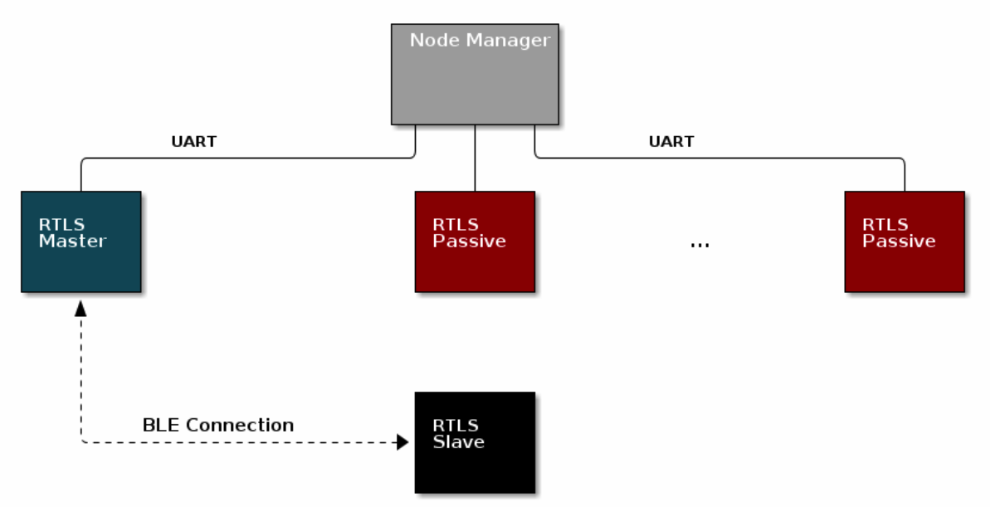
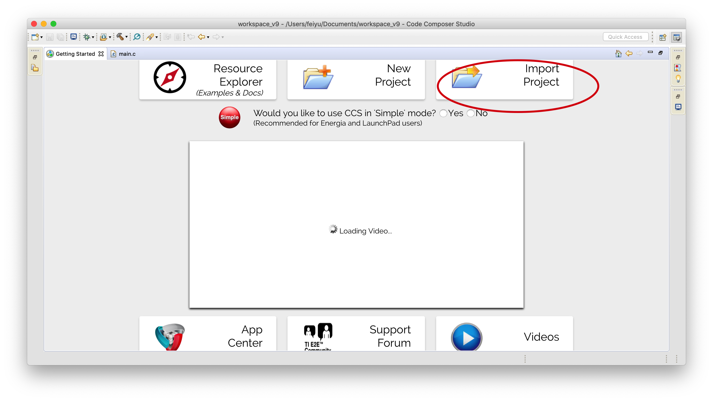
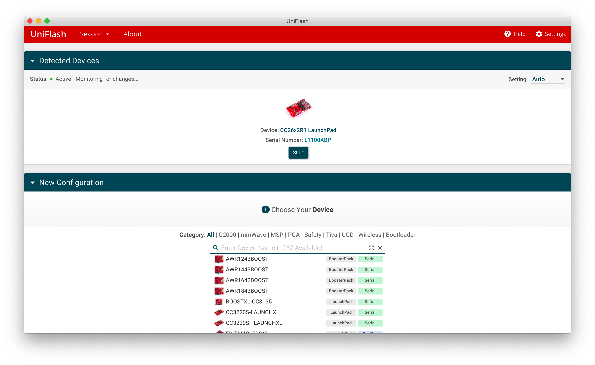
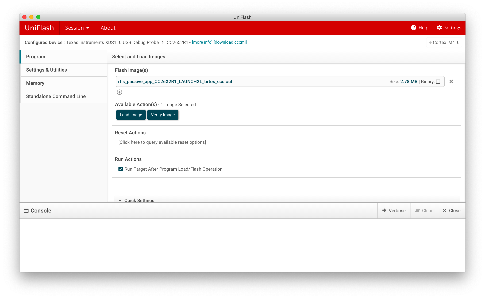
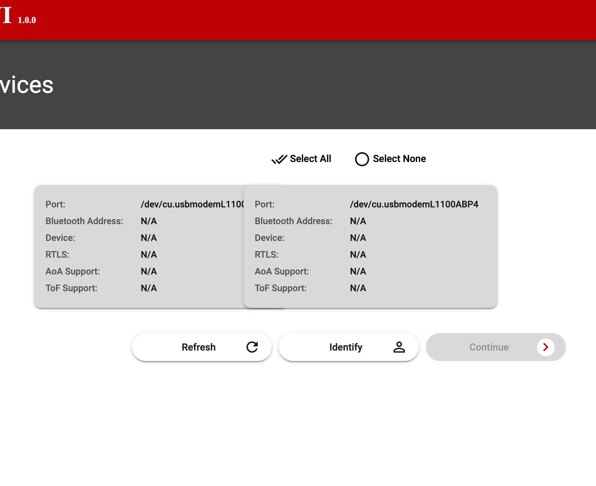
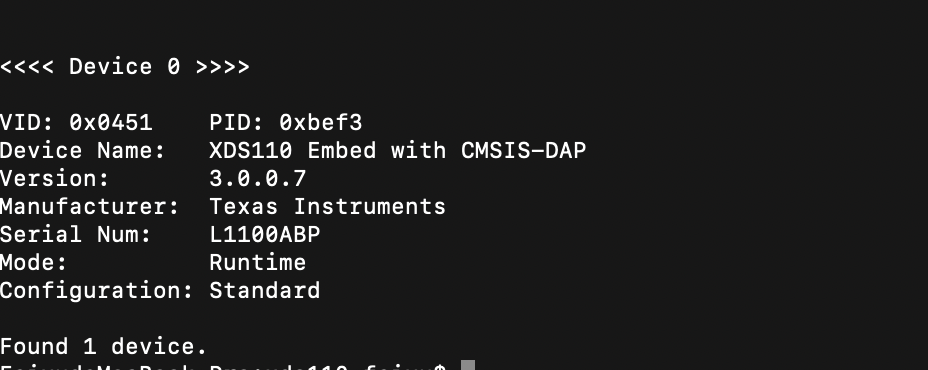
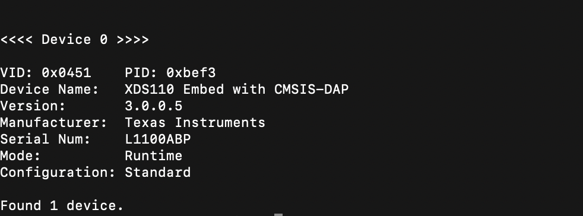
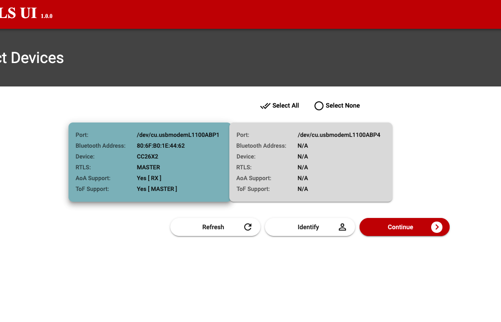

一、硬件需求 & 软件环境
- SimpleLink CC26x2R LaunchPad x 3, BOOSTXL-AoA x 1;
- SimpleLink CC13x2/26x2 SDK ver.3.40;
- Python 3.7+;
- Code Composer Studio （CCS）ver.9.2.0.0;
- Uniflash ver.5.3.1;
- TICloudAgent（安装CCS时就会自动安装）;
CC26x2R开发版是基于蓝牙低功耗5.1技术进行定位，用户可以从开发板中提取到AoA、ToF信息，AoA和ToF定位原理可以参考官网说明http://dev.ti.com/tirex/explore/node?node=AHYhhuDNTaRXzkOlahOlvA__pTTHBmu__LATEST，或者其他一些无线技术定位文章。本文基于MacOS进行搭建，Windows环境会有一定的差异。另外，不同版本的SDK在使用的过程中，也会有一些差异。
硬件：SimpleLink CC26x2R LaunchPad && BOOSTXL-AoA

CC26x2R开发板在RTLS（Real-time Locating System）系统中充当定位节点，本身就内置单根天线，但是单天线的节点不足以满足RTLS的定位需求，所以需要将开发版外接BOOSTXL-AoA，以达到扩展节点天线数目的目的。
软件安装
1、配置Python 3.7环境，教程：https://pythonguidecn.readthedocs.io/zh/latest/starting/install3/osx.html, 如果下载缓慢，可以为homebrew配置国内镜像如：阿里云、中科大等。
2、下载SimpleLink CC13x2/26x2 SDK，需要注册TI账号，注册完成后即可下载，下载之前，TI会询问你SDK的用途，选择民用Civil即可。下载地址：http://www.ti.com/tool/download/SIMPLELINK-CC13X2-26X2-SDK.
3、Code Composer Studio （CCS），下载地址：https://software-dl.ti.com/ccs/esd/documents/ccs_downloads.html, 如果是在MacOS上进行开发，建议下载9.20版本，原因后面解释。
4、Uniflash，下载地址http://www.ti.com/tool/UNIFLASH.
二、RTLS
1、RTLS系统框架

定位系统包含4部分：Node Manager，Master，Slave，Passive。Node Manager是运行在PC端的软件（第四小节第五小节介绍），CC26x2R开发板扮演Master，Slave，Passive角色（第二小节介绍）。
关于Master，Slave，Passive详细介绍可以参照官网说明，以下只做简要的介绍：
❤ Master
与Slave端建立连接，并且讲连接链路的参数（地址信息，时钟精度，CRC等）传递给PC端。
与外围设备通过BLE链路分享AoA参数。
进行I/Q采样。
向Slave端发送指令，使得Slave端发送AoA packets。
✓ Slave
- 在BLE协议中扮演外围设备。
- 通过CTE发送AoA packets到Master端。
☀ Passive
- 可以通过CTE接收数据包，进行I/Q采样。
- 监听Master和Slave之间的连接链路。
2、硬件程序编译
打开CCS，分别导入已经下载好的SDK（simplelink_cc13x2_26x2_sdk_3_40_00_02/examples/rtos/CC26X2R1_LAUNCHXL/ble5stack/）中的rtls_master, rtls_passive,rtls_slave 三个例程。

编译完成之后，在工程文件夹目录下的Debug目录下，会生成.out和.hex的文件，这两个文件选其一即可，使用UniFlash烧录到硬件中。
3、程序烧录
将Boards通过USB串口连接到PC端，UniFlash会自动检测到设备以及相应的端口号，然后start，找到刚刚生成的.out文件，Load Image完成烧录。（依次将rtls_master, rtls_passive,rtls_slave 三个例程编译产生的.out文件烧录到Boards中）


4、运行可视化 Demo
TI在最新的SDK中为开发者提供了可视化的UI界面，使得开发更加友好。TI也保留了以前的命令行操作，对于我这种小白来说，一开始入手，还是先选择可视化的UI界面。
在终端中输入以下指令：
cd /Applications/ti/simplelink_cc13x2_26x2_sdk_3_40_00_02/tools/ble5stack/rtls_agent/rtls_ui
chmod 777 rtls_ui_macos
rtls_ui_macos
运行后，在电脑的默认浏览器中就会打开UI界面：

系统并没有识别出开发板，并且显示开发板不可用”N/A”。这是因为我们在使用CCS编译程序时，CCS会自动检测并更新XDS110固件的版本，打开终端，输入如下指令：
cd /Applications/ti/ccs920/ccs/ccs_base/common/uscif/xds110
xdsdfu -e

使用xdsdfu工具查看固件版本是3.0.0.7，这个问题困扰了我很久，我在TI E2E论坛上找到了类似问题https://e2e.ti.com/support/wireless-connectivity/bluetooth/f/538/p/875870/3243366，我推测这个问题是和操作系统以及固件版本有关。在Windows上，开发板的固件版本即使在3.0.0.7，也依然可以被系统识别；但是在MacOS上，最新的固件版本则不可以支持，所以需要讲固件版本恢复到之前的老版本，所以这也为什么是在开头的时候，我建议大家下载CCS9.2，而不是下载最新的CCS，在CCS9.2中，我们可以使用xdsdfu工具将固件恢复到3.0.0.5。
xdsdfu -m
xdsdfu -f firmware.bin -r
然后再使用xdsdfu -e 来查看现在的固件版本，

之后，重新运行可视化命令，Get Start后，自动识别PC连接的开发板，并显示开发板的属性：

5、运行非可视化Demo
a、创建python虚拟环境
cd /Applications/ti/simplelink_cc13x2_26x2_sdk_3_40_00_02/tools/ble5stack/rtls_agent/
python3 -m venv .venv
在当前目录下，新建了一个.venv文件，此文件是隐藏文件夹，使用快捷键”shift+command+.”查看。
source .venv/bin/activate
然后，打开package.sh，将第三行的代PYTHON3=python3.7修改为PYTHON3=python
在终端继续运行以下命令：
package.sh -c -b -u -i
然后在当前目录下新建requirements.txt，
打开txt，输入以下内容，
construct==2.9.45
websockets==7.0
pyserial==3.4
requirements.txt存储的是python的外部依赖包名称，然后使用pip进行安装，
python -m pip install -r requirements.txt
这里，如果下载失败，就重新下载几次，直到成功为止。
打开examples目录下的rtls_example_with_rtls_util.py文件，找到定义设备端口号的地方，并修改
devices = [
{"com_port": "/dev/cu.usbmodemL1100ABP1", "baud_rate": 460800, "name": "CC26x2 Master"},
{"com_port": "/dev/cu.usbmodemL1100ADL1", "baud_rate": 460800, "name": "CC26x2 Passive"}, ]然后，在终端中继续运行以下指令：
python -u examples/rtls_example_with_rtls_util.py
然后，可以在终端中就可以查看打印的日志信息了。
三、TI Cloud
CCS+SDK+UniFlash一共大约3.5G，并且CCS编译程序时所占用的内存资源很大，如果有同学电脑存储资源有限，不想下载这么大的开发工具，可以选择TI Cloud云开发工具，集成了CCS，UniFlash等开发工具以及Resource Explorer等资源库，可以满足一些基本的硬件开发。详见https://dev.ti.com/.
关于开发板的其他功能开发，将在后面章节会继续详解。